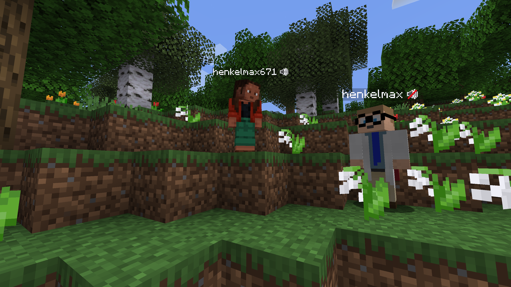
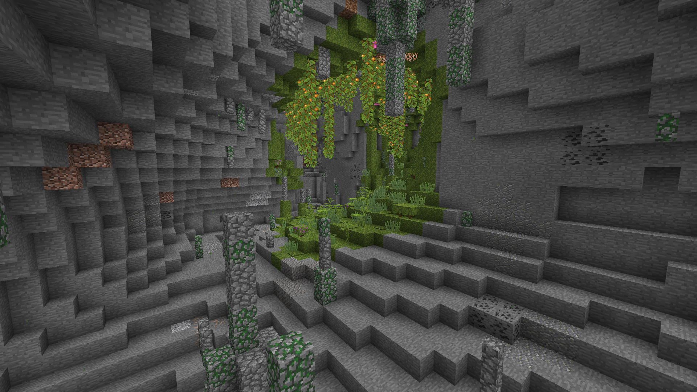
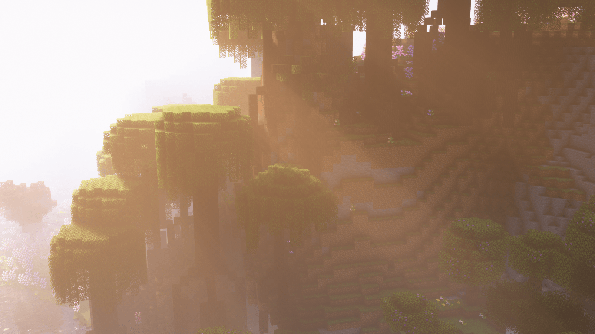

Mody do instalacji, aby wszystko działało!

Simple Voice Chat
Mod, który dodaje voice chat do minecrafta! Przy instalacji tego moda, prosiłbym o zainstalowanie dodatkowego moda znajdującego się poniżej


Sound Physics Remastered
Dodatek do Simple Voice Chat, który powoduje realistyczne tłumienie, pogłos oraz pochłanianie dźwięku przez otoczenie
Sodium
Mod, który wpływa na polepszenie wydajności minecrafta, jest owiele lepszy od standardowego optifine, jeżeli chodzi o polepszenie działania gry
Lithium
Tak jak Soduim, wpływa na polepszenie wydajności minecrafta!
